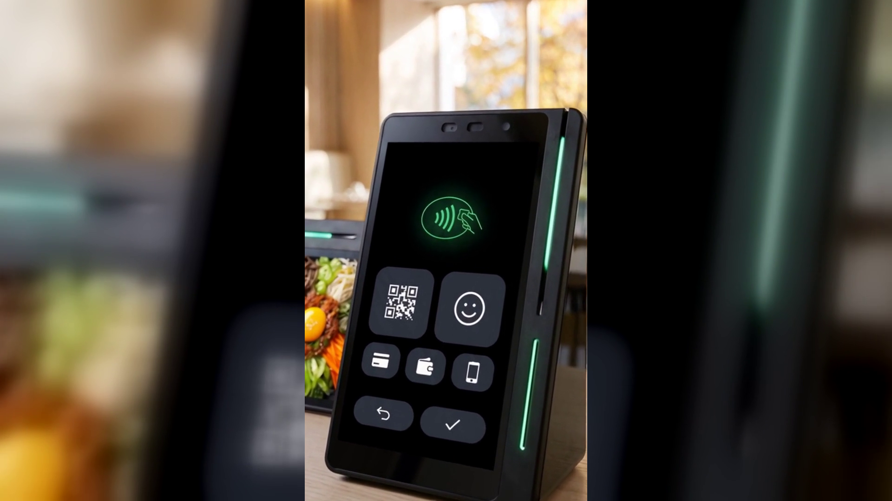

얼굴로 결제한다는 말, 우리 매장 계산대에서는 무엇이 달라질까요
결론부터 말씀드리면, 손님이 계산대에서 꺼낼 것이 없어집니다.
지갑도 폰도 꺼내지 않고, 등록한 얼굴 하나로 결제가 끝납니다.
네이버페이 커넥트(Npay 커넥트)가 지원하는 페이스사인 이야기입니다.
점심시간에 줄이 서는 가게를 보면, 정작 카드가 승인되는 시간은 몇 초입니다.
길어지는 건 그 앞입니다.
손님이 가방을 뒤지고, 지갑을 열고, 폰 잠금을 풀고, 앱을 찾는 시간입니다.
사장님은 그 시간 동안 아무것도 못 합니다.
포장을 마저 하지도, 다음 주문을 받지도 못한 채 손을 놓고 기다립니다.
한 건에 몇 초라 해도 점심 한 시간 동안 쌓이면 줄의 길이가 달라집니다.
들어왔다가 줄을 보고 그냥 나가는 손님은 매출로 잡히지도 않습니다.
계산대에서 새는 시간은 그래서 눈에 잘 띄지 않습니다.
카드, 간편결제, QR, 상품권까지 손님이 고를 수 있는 결제 수단은 계속 늘었습니다.
선택지가 많아진 건 좋은 일이지만, 그만큼 손님이 계산대 앞에서 해야 할 동작도 늘었습니다.
무엇으로 낼지 고르고, 그 수단을 꺼내고, 화면을 켜고, 갖다 댑니다.
결제가 빨라진 게 아니라 준비가 길어진 셈입니다.
그래서 계산대 속도를 줄이려면 승인 시간을 줄일 것이 아니라
손님이 무언가를 꺼내는 동작 자체를 없애야 합니다.
네이버페이 커넥트는 카드, QR, 삼성페이와 함께 페이스사인 결제를 지원합니다.
손님이 미리 얼굴을 등록해 두면, 계산대에서는 꺼낼 것이 없습니다.
지갑을 찾을 필요도, 폰 잠금을 풀 필요도 없습니다.
계산대 앞에 서는 것으로 결제 준비가 끝나 있는 상태가 됩니다.
네이버 공식 안내에는 「Face sign 이외 향후 타 생체인증 결제 확장 예정」이라고 되어 있습니다.
아직 예정된 계획이니, 지금 쓸 수 있는 것은 페이스사인이라고 보시면 됩니다.
확장은 예정이라는 말 그대로만 알아두시면 충분합니다.
네이버페이 커넥트는 카운터에 올려놓는 작은 기기입니다.
커피컵 정도 높이의 유광 검정 쐐기 모양이고, 따로 세우는 기둥 스탠드가 없습니다.
좁은 계산대에도 자리를 많이 뺏지 않습니다.
화면이 둘입니다.
사장님이 보는 세로 화면이 있고, 손님 쪽을 향한 작은 화면이 따로 있습니다.
손님은 자기 앞 화면만 보고 결제를 끝냅니다.
사장님이 기기를 돌려 보여주거나 화면을 대신 눌러 줄 일이 줄어듭니다.
옆면에는 초록 LED가 한 줄 들어옵니다.
지금 결제가 진행 중인지 멀리서도 눈에 들어옵니다.
결제 말고도 리뷰, 마케팅, 홍보가 한 기기에 같이 들어 있습니다.
결제와 동시에 네이버 리뷰로 이어지고, 결제 데이터로 쿠폰과 적립을 자동으로 챙기고,
손님이 머무는 동안 매장 소식을 화면으로 알립니다.
페이스사인은 그중 결제 쪽 이야기입니다.
네이버 공식 안내에는 앞으로도 매장 운영에 도움이 될 새로운 기능이 추가될 예정이며
일부 서비스는 오픈을 준비 중이라고 적혀 있습니다.
계산대에서 손님이 지갑을 찾는 몇 초는 작아 보이지만, 하루치를 모으면 줄의 길이가 됩니다.
페이스사인은 그 몇 초를 없애는 방법입니다.
결제 수단이 하나 늘어나는 것이 아니라, 손님이 꺼낼 것이 하나 없어지는 일입니다.
지갑도 폰도 꺼내지 않습니다. 등록한 얼굴 하나면 결제가 끝납니다.
줄이 자주 서는 계산대라면 한 번쯤 생각해 보실 만합니다.
누리네트웍스는 수도권 POS·결제단말 대리점입니다.
정품 신제품 보증 · 수도권 직영 설치로 진행합니다.
도입이나 교체를 검토 중이시라면 매장 상황을 들려주십시오.
📞 전화상담 1544-7754
🌐 홈페이지 https://nwpos.co.kr
누리네트웍스 · 결제는 더 쉽게, 매장은 더 스마트하게
🔗 https://nwpos.co.kr?utm_source=youtube&utm_medium=social&utm_campaign=daily7&utm_content=connect-facesign
#네이버단말기 #네이버커넥트 #Npay커넥트 #네이버페이단말기 #네이버리뷰 #매장리뷰 #매장홍보 #단골관리 #쿠폰적립 #포인트적립 #사인패드 #결제단말기 #카드단말기 #포스기 #포스 #간편결제 #카드결제 #매장운영 #매장관리 #자영업 #소상공인 #자영업노하우 #개인사업자 #가맹점 #창업준비 #누리포스 #누리네트웍스 #Shorts
[SNS아이콘]
[SNS배너]